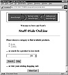

|
Developing Java Enterprise Applications
by Stephen Asbury ; Scott R. Weiner
Wiley Computer Publishing, John Wiley & Sons, Inc.
ISBN: 0471327565 Pub Date: 02/01/99

|
The servlet that displays a report of the INVENTORY table uses the ShoppingCartBean’s getInventory method to get the list of available items. In a larger application with more reports, you might want to use separate EJBs for the reports rather than including them in an existing one. This is included in this example to simplify the learning process.
The getInventory method, defined as follows, connects to the database and retrieves all of the available items. Information from each row in the database is used to create a ShoppingCartItem object. These objects are temporarily stored in a vector. Once all the items are read from the database, the vector is converted to an array, and the array is returned to the caller. Finally, the database connection is closed.
public Object[] getInventory()
{
Vector items;
Object[] retVal=null;
ShoppingCartItem curItem;
double price;
int quantity;
int sales;
String desc;
ResultSet rs=null;
Statement statement=null;
Connection conn=null;
items = new Vector();
try
{
conn = connectToDB();
statement = conn.createStatement();
rs = statement.executeQuery(“select * from inventory”);
//Only take the first one
while(rs.next())
{
price = rs.getDouble(“PRICE”);
quantity = rs.getInt(“QUANTITY”);
sales = rs.getInt(“SALES”);
desc = rs.getString(“ITEM_DESC”);
curItem = new ShoppingCartItem(desc,price,quantity);
curItem.sales = sales;
items.addElement(curItem);
}
retVal = new Object[items.size()];
items.copyInto(retVal);
}
catch(Exception exp)
{
logToServer(exp.toString());
retVal = null;
}
finally
{
try
{
if(rs!=null) rs.close();
if(statement != null) statement.close();
if(conn!=null) conn.close();
}
catch(Exception exp)
{
logToServer(exp.toString());
}
}
return retVal;
}
For convenience, the ShoppingCartBean has a method called connectToDB that makes the database connection and returns it. The information for the connection is based on the configuration parameters. Remember that in an Application Server, this connection process is probably loaded via an existing connection from a pool rather than by actually making a new connection to the database. The complete definition of connectToDB is included here:
protected Connection connectToDB()
{
Connection retVal = null;
try
{
Class.forName(driver);
retVal = DriverManager.getConnection(url,user,password);
}
catch(Exception exp)
{
retVal = null;
logToServer(exp.toString());
}
return retVal;
}
}
As you can see, the ShoppingCartBean provides a great deal of functionality and integrates the JDBC interfaces with Enterprise JavaBeans.
NOTE: When using BEA WebLogic and possibly other servers, you are not able to use file system persistence for Entity beans while using JDBC calls in the same beans due to a problem with processing in the transactional models. Check the documentation on your EJB host for details.
JavaServer Pages and HTML
The online store contains two types of JavaServer Pages and one type of regular HTML page. The first type of JSP is the site’s home page. The second type is the category page. All of the product pages are static HTML. The decision to use JSP or HTML is based on the resource usage. An online store might feature hundreds of products, and to have hundreds of JSP-generated servlets might take up too many server resources. Static pages do not use the same resources and don’t take any server resources, beyond caches, when just sitting on disk. As a result, regular HTML is a low resource and, it turns out, a fast solution for pages, so we have maximized its usage. In a site with hundreds of categories, you might want to use static pages for the categories as well.
The other architecture that many sites use in this situation is a single JSP, servlet, or CGI script that retrieves data from the database and dynamically creates all of the pages. In some respects, this is the most flexible mechanism, but it does require the most processing per page.
The static page and completely dynamic design can also be combined by creating a program that generates pages from the database and stores them on disk. The site administrator could run this program nightly so that the site is static throughout the day but can change on a daily basis. This compromise reduces the processing per page and reduces the up-to-the-second nature of the pages, while still maintaining some of the advantages of dynamic pages.
The main page for the online store is implemented in a JHTML page called index.jhtml. The majority of the page is static HTML; only the list of available categories and the advertisement are updated with each request. The advertisement is handled by the AdLinkRotatorServlet, a discussion of which follows. When displayed, the index.jhtml page looks like the Web page pictured in Figure 25.8.
To find the available categories, this page looks at its current directory and assumes that all subdirectories represent categories. The name of the directory is treated as the category name. The highlighted code that follows contains the Java that reads the current directory and displays the list of categories. The list is initialized only once—when the page is first loaded. The list of categories is stored in a vector called categories, defined in the <java type=class> tag at the bottom of the JHTML file. One possible improvement to this model is to have the page recheck the directory for updates on a regular schedule.

Figure 25.8 Index.jhtml.
<HTML>
<HEAD>
<TITLE>
Stuff 4Sale OnLine
</TITLE>
</HEAD>
<BODY TEXT=“#000000” BGCOLOR=“#FFFFFF” LINK=“#FF0000” VLINK=“#800080”>
<CENTER>
<TABLE WIDTH=500 BORDER=0>
<TR>
<TD>
<CENTER>
<servlet
code=“shopcart.servlets.AdLinkRotatorServlet”
imagedir=“C:\\servers\\JavaWebServer1.1\\public_html\\shopcart\\ads”
imageroot=“/shopcart/ads”
logserver=“192.168.0.172”>
</servlet>
<BR>
<H3>Welcome to Steve and Scott’s</H3>
<H1>Stuff 4Sale OnLine</H1>
<HR>
</CENTER>
<H3>Please choose a category to find available products.</H3>
<UL>
<java>
int i,max;
String uri = request.getRequestURI();
int ind;
if(categories == null)
{
initCategories(request.getRealPath(uri));
}
max = categories.size();
//Clean off the file name from the requestURI
ind = uri.lastIndexOf(“/”);
if(ind != (uri.length()-1))
{
uri = uri.substring(0,ind);
}
for(i=0;i<max;i++)
{
</java>
<LI>
<A HREF=“‘uri+”/“+categories.elementAt(i)+”/index.jhtml“‘”>
<java type=print>categories.elementAt(i)</java>
</A>
<BR>
<java>
}
</java>
</UL>
</TD>
</TR>
<TR>
<TD>
<H3>... or search for a product by key word:</H3>
<FORM METHOD=GET
ACTION=“/servlet/HTMLSearchServlet/shopcart/home”>
<INPUT NAME=“query” VALUE=“” SIZE=25>
<SELECT NAME=“maxhits” SIZE=1>
<OPTION VALUE=“25”>25
<OPTION VALUE=“50”>50
<OPTION VALUE=“100”>100
</SELECT>
<BR><BR>
<INPUT TYPE=“Submit” NAME=“submit” VALUE=“Search”>
<INPUT TYPE=“Submit” NAME=“submit” VALUE=“Help”>
</FORM>
<H3>... or view your existing shopping cart:</H3>
<CENTER>
<H2>
<FORM ACTION=“/servlet/ShoppingCartServlet”>
<INPUT TYPE=“HIDDEN” NAME=“action” VALUE=“view”>
<INPUT TYPE=“SUBMIT” VALUE=“View Cart”>
</FORM>
</H2>
</CENTER>
</TD>
</TR>
</TABLE>
</CENTER>
</BODY>
</HTML>
<java type=class>
Vector categories;
String docRoot;
public void initCategories(String rt)
{
File rootDir=null;
String[] files;
int i,max;
File curFile;
docRoot = rt;
categories = new Vector();
try
{
rootDir = new File(docRoot);
if(!rootDir.isDirectory())
rootDir = new File(rootDir.getParent());
if((rootDir!=null) && rootDir.exists())
{
files = rootDir.list();
max = files.length;
for(i=0;i<max;i++)
{
curFile = new File(rootDir,files[i]);
if(curFile.exists()
&& curFile.isDirectory())
{
categories.addElement(files[i]);
}
}
}
}
catch(Exception exp)
{
categories.removeAllElements();
}
}
</java>

|


){kind=link}
){kind=link}